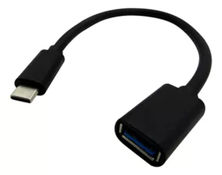
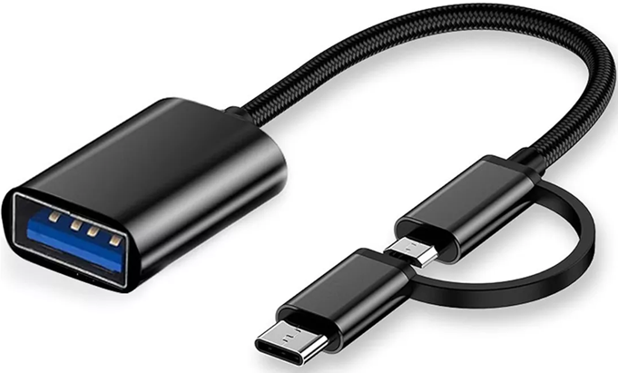
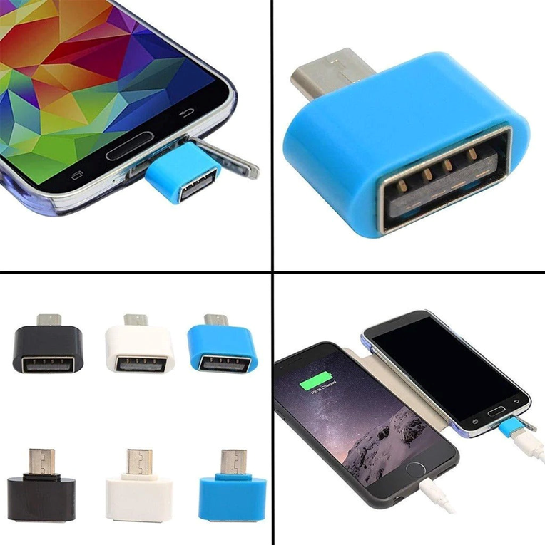
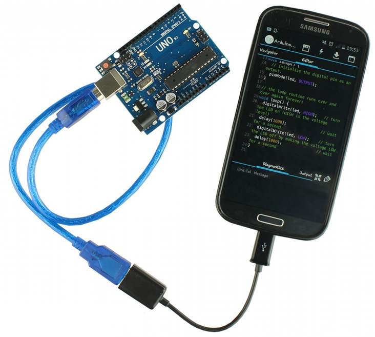

Temas:
- ¿Qué es un convertidor OTG?
- ¿Para qué sirve un convertidor OTG?
- Tipos de convertidores OTG.
- Convertidor OTG Tipo C o V8 Macho A USB 3.0 Hembra.
¿Qué es un convertidor OTG?
Un conversor OTG es un dispositivo que permite conectar periféricos USB a un teléfono inteligente o tableta Android. "OTG" significa "On-The-Go". Permite que el dispositivo Android actúe como un host USB, en lugar de solo un dispositivo, es decir, se puede conectar dispositivos USB como unidades flash, teclados, ratones, cámaras, etc.

¿Para qué sirve un convertidor OTG?
- Transferir archivos: Conecta memorias USB para copiar, mover o eliminar archivos de forma rápida y sencilla.
- Escribir más rápido: Usa un teclado físico para escribir correos electrónicos, documentos o mensajes con mayor comodidad y precisión.
- Controlar con precisión: Conecta un ratón para navegar por tu dispositivo Android con mayor facilidad y exactitud.
- Importar fotos y vídeos: Conecta una cámara para transferir tus fotos y vídeos capturados directamente a tu dispositivo Android.
- Jugar con estilo: Conecta un joystick para disfrutar de tus juegos favoritos con controles físicos.
- Ampliar la conectividad: Conecta un concentrador USB para conectar varios dispositivos USB a la vez, como un teclado, un ratón y una memoria USB. basada en microcontroladores.
Tipos de convertidores OTG
Convertidor OTG estándar
El diseño más común y versátil.
Cuenta con un conector USB macho en un extremo y un conector USB hembra en el otro.
Permite conectar un único dispositivo USB al dispositivo Android a la vez.
Convertidor OTG con hub USB
Ofrece mayor conectividad al integrar un hub USB en su diseño.
Posee un conector USB macho en un extremo y un hub USB con múltiples puertos USB hembra en el otro.
Convertidor OTG Tipo C o V8 Macho a USB Hembra.
Los conversores OTG Tipo C o V8 Macho A USB Hembra son herramientas prácticas que permiten conectar una amplia gama de periféricos USB a tu dispositivo Android o iOS, independientemente de su puerto de carga, como, por ejemplo, la plaqueta Arduino UNO.
